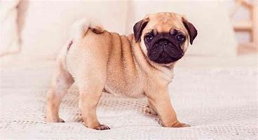

Los Pug son una razade perros mas antiguas. Gracias a su tamaño compacto, han viajado por todo el mundo como perciados compañeros. Su aspecto distintivo, su lealtad y su comportamiento encantador lo convierten en el favorito de los amantes de los perros de todo el mundo. Es una raza robusta y adaptable que le gusta la compañia, son originarios de china y durante la dinastia Zhou, se consideraba un animal raro y precioso. Vivianen habitaciones especiales del palacio, eran vigilados y alimentados solo con la mejor carne y arroz. Intentar robar un Pug real conllevaba una sentencia de muerte. En el siglo XVI, empezaron a ser populares en Europa, donde eran las mascotas prefreridas de la realeza de los Paises Bajos, Escica e Inglaterra, La Federacion Cinologica Internacional los clasifica en grupo 9 de perros de compañia, su funcion principal es ser de compañoa quitando cualquier otra actividad, por eso estas razas normalmente son de tamaño pequeño. Poseen un caracter alegre y cariñoso, pero algunos de ellos pueden ser muy nerviosos o tener un ladrido agudo

br>
Su tamaño es de 25 a 35 cm, llegan a pesar de 6 a 8 kg y su promedio de vida es de 10 a 12 años.
Los perros Pug son pequeños y resistentes con muchas características bien definidas. Son fácilmente reconocibles ya que tienen un hocico corto y una ligera mordedura. Tienen cabezas grandes y redondas, y ojos oscuros que sobresalen. Su frente tiene profundas arrugas y sus orejas son suaves y aterciopeladas, en forma de triángulos cortos que se mueven hacia delante y se sitúan a la altura de sus ojos.
En general, son compactos y bien musculosos, con una forma cuadrada y simétrica. Tienen cuellos gruesos con pliegues de piel en la base de los hombros. Tienen patas cortas y robustas, y una espalda recta desde los hombros hasta la grupa, que se enrolla ligeramente de lado a lado cuando trotan. La cola del Pug es perfecta y se asienta en lo alto en forma de rizo. El color de su pelo es limitado, incluyendo el negro, el leonado claro, albaricoque y plateado; todos con hocicos negros y un pelaje doble corto y brillante.
Los Pug tienen un pelo fino, grueso y corto que hay que cepillar a menudo, pero que no requiere un aseo avanzado. Las arrugas de su cara son densas y la humedad puede quedar atrapada entre los pliegues, lo que puede provocar una infección. Es necesario limpiarlas cuidadosamente y secarlas a fondo de forma rutinaria. Además, tienen otras arrugas corporales y rollos de piel, sobre todo alrededor del cuello, los hombros y la cola en forma de sacacorchos, que deben limpiarse para eliminar los restos y mantenerse en buen estado.
En cuanto a la muda, al ser un perro con doble capa de pelo, mudan una cantidad considerable de pelo, especialmente durante la primavera y el otoño. Un cepillado regular ayudará a mantener a raya los pelos sueltos, así que compra un cepillo de buena calidad y utilízalo al menos dos veces por semana. También deberás aspirar las alfombras y los muebles con frecuencia para mantener tu hogar lo más libre de pelo que se pueda.